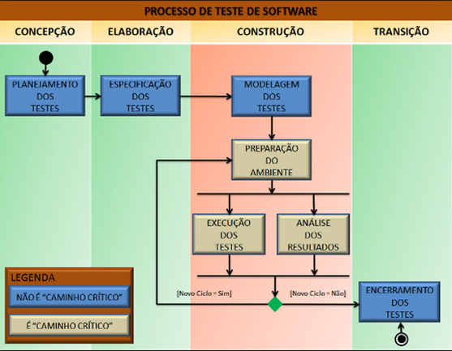
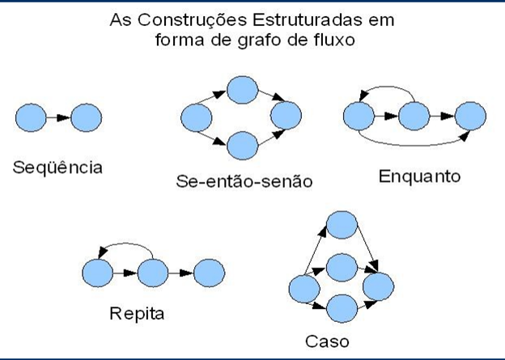
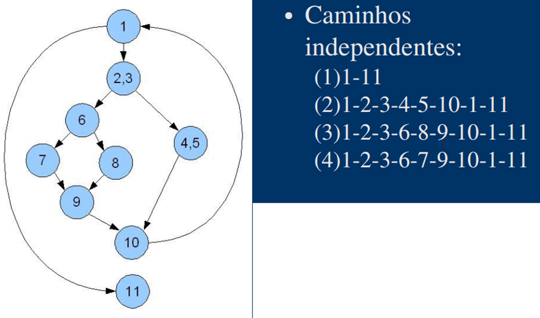

A atividade de teste de software é uma área da TI que vêm crescendo ao longo dos anos e que está diretamente relacionada à necessidade de se produzir produtos de qualidade que atendam a exigências cada vez maiores. Segundo Myers “Testar um programa é analisar um programa com a intenção de descobrir erros e defeitos”. Percebemos que as empresas que produzem software vêm sofrendo cada dia mais pressões de mercado/clientes/usuário que sempre exigem produtos de alta qualidade, são pouco tolerantes com atrasos nas entregas.
Tendo em vista atender estas necessidades, existem muitos sistemas em que uma falha ocorrida pode causar prejuízos diretos ou mensuráveis.
A empresa Symantec proprietária do software antivírus Norton em junho de 2007 teve de compensar 50 mil vítimas de uma atualização que retirava arquivos de sistema de uso, dando a elas uma extensão de 12 meses da licença do Norton e uma cópia da ferramenta Norton Save & Restore 2.0.
No ano de 1988, ocorreram prejuízos imensuráveis quando o navio de guerra americano Vincennes derrubou um Airbus A-300 da Iran Air no Golfo Pérsico causando a morte de 290 pessoas incluindo 66 crianças, a falha foi atribuída ao software de reconhecimento do navio que confundiu o avião com um F-14.
O Processo de Testes de Software representa uma estruturação de etapas, atividades, artefatos, papéis e responsabilidades que buscam a padronização dos trabalhos e ampliar a organização e controle dos projetos de testes.
O Processo de Teste, como qualquer outro processo deve ser revisto continuamente, de forma a ampliar sua atuação e possibilitar aos profissionais uma maior visibilidade e organização dos seus trabalhos, o que resulta numa maior agilidade e controle operacional dos projetos de testes.
Nesta fase é elaborada a Estratégia de Teste e o Plano de Teste.
O objetivo desta fase é preparar o Ambiente de Teste (equipamentos, pessoal, ferramentas de automação, massa de testes) para que os testes sejam executados conforme planejados.
Nesta fase temos as seguintes atividades: Elaborar/ Revisar casos de testes e Elaborar/ Revisar roteiros de testes.
Os testes são executados e registrado os resultados obtidos.
Esta é a última fase do ciclo de vida de testes, onde o projeto é finalizado e toda documentação é arquivada.
É uma técnica de caixa branca, onde calcula se a complexidade lógica do software e utiliza esta medida como base para descobrir os caminhos básicos do software e exercendo o teste de modo que todos os caminhos sejam efetuados (PRESSMAN, 2006; MCCABE, 1976).
Os casos de teste projetados para exercitarem este conjunto básico têm garantia de executar cada instrução do programa pelo menos uma vez durante a atividade de teste.
Antes que o método de caminho básico possa ser introduzido, uma notação simples para a representação do fluxo de controle, chamada de grafo de fluxo (ou grafo de programa) deve ser introduzida. O grafo de fluxo mostra o fluxo de controle lógico usando a notação ilustrada na Figura abaixo.
Cada construção estruturada tem um símbolo correspondente de grafo de fluxo.
A complexidade ciclomática é computada em uma das 3 formas seguintes:
A complexidade ciclomática é computada em uma das 3 formas seguintes:
A complexidade ciclomática é computada em uma das 3 formas seguintes:
A Complexidade Ciclomática do grafo de fluxo é 4
Um caminho independente é um caminho no grafo de fluxo que inclui pelo menos uma aresta nova (que não tenha sido ainda atravessada)
O caminho independete nos fornece um limite superior para a quantidade de testes que deve ser conduzida para garantir que todos os comandos tenham sido executados pelo menos uma vez e cada condição terá sido executada no seu lado verdadeiro e no seu lado falso.
É um método de projeto de casos de teste que põe à prova as condições lógicas contidas num módulo de programa. Concentra-se em testar cada condição do programa.
As estratégias de teste de condição tem duas vantagens:
O propósito do teste de condição é detectar não somente erros nas condições de um programa, mas também outros erros no programa.
O método de teste de fluxo de dados seleciona caminhos de teste de um programa de acordo com as localizações das definições e usos de variáveis no programa. São úteis para selecionar caminhos de teste de um programa que contenha instruções de laços e if aninhadas.
Uma vez que as instruções de um programa relacionam-se entre si de acordo com as definições e usos de variáveis, a abordagem de teste de fluxo de dados é eficiente para a proteção contra erros. Porém, os problemas de medir a cobertura de teste e a seleção de caminhos de teste de fluxo de dados são mais complexos do que os correspondentes problemas para o teste de condição.
Teste de ciclo é uma técnica de teste caixa-branca que focaliza exclusivamente a validade de construções de ciclo. Quatro diferentes classes de ciclos podem ser definidas: